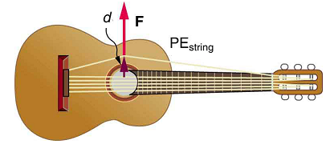
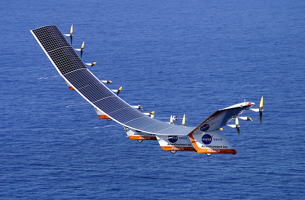
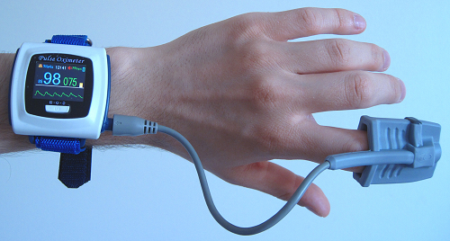
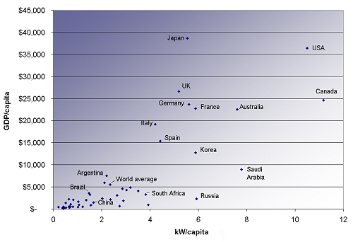

- Explain how an object must be displaced for a force on it to do work.
- Explain how relative directions of force and displacement determine whether the work done is positive, negative, or zero.
The scientific definition of work differs in some ways from its everyday meaning. Certain things we think of as hard work, such as writing an exam or carrying a heavy load on level ground, are not work as defined by a scientist. The scientific definition of work reveals its relationship to energy—whenever work is done, energy is transferred. For work, in the scientific sense, to be done, a force must be exerted and there must be motion or displacement in the direction of the force.
Formally, theworkdone on a system by a constant force is defined to bethe product of the component of the force in the direction of motion times the distance through which the force acts. For one-way motion in one dimension, this is expressed in equation form as
where \(W\) is work, \(d\) is the displacement of the system, and \(\theta\) is the angle between the force vector \(\vec{F}\) and the displacement vector \(\vec{d}\), as in Figure . We can also write Equation \ref{eq1} as
To find the work done on a system that undergoes motion that is not one-way or that is in two or three dimensions, we divide the motion into one-way one-dimensional segments and add up the work done over each segment.
The work done on a system by a constant force isthe product of the component of the force in the direction of motion times the distance through which the force acts. For one-way motion in one dimension, this is expressed in equation form as
where \(W\) is work, \(F\) is the magnitude of the force on the system, \(d\) is the magnitude of the displacement of the system, and \(\theta\) is the angle between the force vector \(F\) d the displacement vector \(d\).
To examine what the definition of work means, let us consider the other situations shown in Figure. The person holding the briefcase in Figure \(\PageIndex{1b}\)does no work, for example. Here \(d = 0\), so \(W = 0\). Why is it you get tired just holding a load? The answer is that your muscles are doing work against one another,but they are doing no work on the system of interest(the “briefcase-Earth system” - seeGravitational Potential Energyfor more details). There must be motion for work to be done, and there must be a component of the force in the direction of the motion. For example, the person carrying the briefcase on level ground in Figure \(\PageIndex{1c}\) does no work on it, because the force is perpendicular to the motion. That is, \(\cos \, 90^o = 0\), so \(W = 0\).
In contrast, when a force exerted on the system has a component in the direction of motion, such as in Figure \(\PageIndex{1d}\), workisdone—energy is transferred to the briefcase. Finally, in Figure \(\PageIndex{1e}\), energy is transferred from the briefcase to a generator. There are two good ways to interpret this energy transfer. One interpretation is that the briefcase’s weight does work on the generator, giving it energy. The other interpretation is that the generator does negative work on the briefcase, thus removing energy from it. The drawing shows the latter, with the force from the generator upward on the briefcase, and the displacement downward. This makes \( \theta = 180^o\), and \(\cos \, 180^o = -1\), therefore \(W\) is negative.
Work and energy have the same units. From the definition of work, we see that those units are force times distance. Thus, in SI units, work and energy are measured innewton-meters. A newton-meter is given the special namejoule(J), and \(1 \, J = 1 \, N \cdot m = 1 \, kg \, m^2/s^2\). One joule is not a large amount of energy; it would lift a small 100-gram apple a distance of about 1 meter.
How much work is done on the lawn mower by the person in Figure (a) if he exerts a constant force of 75.0 N at an angle \(35^o\) below the horizontal and pushes the mower 25 m. on level ground? Convert the amount of work from joules to kilocalories and compare it with this person’s average daily intake of10,000 kJ(about2400 kcal) of food energy. Onecalorie(1 cal) of heat is the amount required to warm 1 g of water by \(1^o C\) and is equivalent to4,184 J, while onefood calorie(1 kcal) is equivalent to4,184 J.
We can solve this problem by substituting the given values into the definition of work done on a system, stated in the equation \(W = Fd \, cos \, \theta\). The force, angle, and displacement are given, so that only the work \(W\) is unknown.
The equation for the work is (Equation \ref{eq2}):
Substituting the known values gives
Converting the work in joules to kilocalories yields \(W = (1536 \, J)(1 \, kcal/4184 \, J) = 0.367 kcal.\) The ratio of the work done to the daily consumption is
This ratio is a tiny fraction of what the person consumes, but it is typical. Very little of the energy released in the consumption of food is used to do work. Even when we “work” all day long, less than 10% of our food energy intake is used to do work and more than 90% is converted to thermal energy or stored as chemical energy in fat.
📖 OpenStax College Physics, Section 7.1. openstax.org · CC BY 4.0
- Explain work as a transfer of energy and net work as the work done by the net force.
- Explain and apply the work-energy theorem.
What happens to the work done on a system? Energy is transferred into the system, but in what form? Does it remain in the system or move on? The answers depend on the situation. For example, if the lawn mower in[link](a) is pushed just hard enough to keep it going at a constant speed, then energy put into the mower by the person is removed continuously by friction, and eventually leaves the system in the form of heat transfer. In contrast, work done on the briefcase by the person carrying it up stairs in[link](d) is stored in the briefcase-Earth system and can be recovered at any time, as shown in[link](e). In fact, the building of the pyramids in ancient Egypt is an example of storing energy in a system by doing work on the system. Some of the energy imparted to the stone blocks in lifting them during construction of the pyramids remains in the stone-Earth system and has the potential to do work.
In this section we begin the study of various types of work and forms of energy. We will find that some types of work leave the energy of a system constant, for example, whereas others change the system in some way, such as making it move. We will also develop definitions of important forms of energy, such as the energy of motion.
We know from the study of Newton’s laws inDynamics: Force and Newton's Laws of Motionthat net force causes acceleration. We will see in this section that work done by the net force gives a system energy of motion, and in the process we will also find an expression for the energy of motion.
Let us start by considering the total, or net, work done on a system.Net workis defined to be the sum of work done by all external forces—that is,net workis the work done by the net external force \(F_{net}\). In equation form, this is \(W_{net} = F_{net}d \, cos \, \theta\), where \(\theta\) is the angle between the force vector and the displacement vector. Figure (a) shows a graph of force versus displacement for the component of the force in the direction of the displacement—that is, an \(F \, cos \, \theta\) vs. \(d\) graph. In this case, \(F \, cos \, \theta\) is constant. You can see that the area under the graph is \(F \, cos \, \theta\), or the work done. Figure (b) shows a more general process where the force varies. The area under the curve is divided into strips, each having an average force \((F \, cos \, \theta)_{i(ave)}\). The work done is e \((F \, cos \, \theta)_{i(ave)}d_i\) for each strip, and the total work done is the sum of the \(W_i\). Thus the total work done is the total area under the curve, a useful property to which we shall refer later.
Net work will be simpler to examine if we consider a one-dimensional situation where a force is used to accelerate an object in a direction parallel to its initial velocity. Such a situation occurs for the package on the roller belt conveyor system shown in Figure.
The force of gravity and the normal force acting on the package are perpendicular to the displacement and do no work. Moreover, they are also equal in magnitude and opposite in direction so they cancel in calculating the net force. The net force arises solely from the horizontal applied force \(F_{app}\) and the horizontal friction force \(f\). Thus, as expected, the net force is parallel to the displacement, so that \(\theta = 0\) and \(cos \, \theta = 1\), and the net work is given by
The effect of the net force \(F_{net}\) is to accelerate the package from \(v_0\) to \(v\) The kinetic energy of the package increases, indicating that the net work done on the system is positive. (See Example.) By using Newton’s second law, and doing some algebra, we can reach an interesting conclusion. Substituting \(F = ma\) from Newton’s second law gives
To get a relationship between net work and the speed given to a system by the net force acting on it, we take \(d = x - x_0\) and use the equation studied inMotion Equations for Constant Acceleration in One Dimensionfor the change in speed over a distance \(d\) if the acceleration has the constant value \(a\), namely \(v^2 = v_0^2 + 2ad\). (note that \(a\) appears in the expression for the net work). Solving for acceleration gives \(a = \frac{v^2 - v_0^2}{2d}.\) When \(a\) is substituted into the preceding expression for \(W_{net}\) we obtain
The \(d\) cancels, and we rearrange this to obtain
This expression is called thework-energy theorem,and it actually appliesin general(even for forces that vary in direction and magnitude), although we have derived it for the special case of a constant force parallel to the displacement. The theorem implies that the net work on a system equals the change in the quantity \(\frac{1}{2}mv^2\). This quantity is our first example of a form of energy.
The net work on a system equals the change in the quantity \(\frac{1}{2}mv^2\).
The quantity \(\frac{1}{2}mv^2\) in the work-energy theorem is defined to be the translationalkinetic energy(KE) of a mass \(m\) moving at a speed \(v\). (Translationalkinetic energy is distinct fromrotationalkinetic energy, which is considered later.) In equation form, the translational kinetic energy,
is the energy associated with translational motion. Kinetic energy is a form of energy associated with the motion of a particle, single body, or system of objects moving together.
We are aware that it takes energy to get an object, like a car or the package in Figure, up to speed, but it may be a bit surprising that kinetic energy is proportional to speed squared. This proportionality means, for example, that a car traveling at 100 km/h has four times the kinetic energy it has at 50 km/h, helping to explain why high-speed collisions are so devastating. We will now consider a series of examples to illustrate various aspects of work and energy.
Example: Calculating the Kinetic Energy of a Package
Suppose a 30.0-kg package on the roller belt conveyor system in Figure 7.03.2 is moving at 0.500 m/s. What is its kinetic energy?
Because the mass \(m\) and the speed \(v\) are given, the kinetic energy can be calculated from its definition as given in the equation \(KE = \frac{1}{2}mv^2\).
The kinetic energy is given by \[KE = \dfrac{1}{2}mv^2.\]
Entering known values gives
Note that the unit of kinetic energy is the joule, the same as the unit of work, as mentioned when work was first defined. It is also interesting that, although this is a fairly massive package, its kinetic energy is not large at this relatively low speed. This fact is consistent with the observation that people can move packages like this without exhausting themselves.
Example: Determining the Work to Accelerate a Package
Suppose that you push on the 30.0-kg package in Figure 7.03.2. with a constant force of 120 N through a distance of 0.800 m, and that the opposing friction force averages 5.00 N.
(a) Calculate the net work done on the package. (b) Solve the same problem as in part (a), this time by finding the work done by each force that contributes to the net force.
Strategy and Concept for (a)
This is a motion in one dimension problem, because the downward force (from the weight of the package) and the normal force have equal magnitude and opposite direction, so that they cancel in calculating the net force, while the applied force, friction, and the displacement are all horizontal. (See Figure 7.03.2.) As expected, the net work is the net force times distance.
The net force is the push force minus friction, or \(F_{net} = 120 \, N - 5.00 \, N = 115 \, N\). Thus the net work is
This value is the net work done on the package. The person actually does more work than this, because friction opposes the motion. Friction does negative work and removes some of the energy the person expends and converts it to thermal energy. The net work equals the sum of the work done by each individual force.
Strategy and Concept for (b)
The forces acting on the package are gravity, the normal force, the force of friction, and the applied force. The normal force and force of gravity are each perpendicular to the displacement, and therefore do no work.
The applied force does work.
The friction force and displacement are in opposite directions, so that \(\theta = 180^o\), and the work done by friction is
So the amounts of work done by gravity, by the normal force, by the applied force, and by friction are, respectively,
The total work done as the sum of the work done by each force is then seen to be
The calculated total work \(W_{total}\) as the sum of the work by each force agrees, as expected, with the work \(W_{net}\) done by the net force. The work done by a collection of forces acting on an object can be calculated by either approach.
Find the speed of the package in Figure 7.03.2. at the end of the push, using work and energy concepts.
Here the work-energy theorem can be used, because we have just calculated the net work \(W_{net}\) and the initial kinetic energy, \(\frac{1}{2}mv_0^2\) These calculations allow us to find the final kinetic energy, \(\frac{1}{2}mv^2\) and thus the final speed \(v\).
The work-energy theorem in equation form is
Solving for \(\frac{1}{2}mv^2\) gives
Thus, \[\dfrac{1}{2}mv^2 = 92.0 \, J + 3.75 \, J = 95.75 \, J. \]
Solving for the final speed as requested and entering known values gives
Using work and energy, we not only arrive at an answer, we see that the final kinetic energy is the sum of the initial kinetic energy and the net work done on the package. This means that the work indeed adds to the energy of the package.
How far does the package in Figure 7.03.2. coast after the push, assuming friction remains constant? Use work and energy considerations.
We know that once the person stops pushing, friction will bring the package to rest. In terms of energy, friction does negative work until it has removed all of the package’s kinetic energy. The work done by friction is the force of friction times the distance traveled times the cosine of the angle between the friction force and displacement; hence, this gives us a way of finding the distance traveled after the person stops pushing.
The normal force and force of gravity cancel in calculating the net force. The horizontal friction force is then the net force, and it acts opposite to the displacement, so \(\theta = 180^o\). To reduce the kinetic energy of the package to zero, the work \(W_{fr}\) by friction must be minus the kinetic energy that the package started with plus what the package accumulated due to the pushing. Thus \(W_{fr} = -95.75 \, J\). Furthermore, \(W_{fr} = df' \, cos \, \theta = - Fd'\), where \(d'\) is the distance it takes to stop. Thus,
This is a reasonable distance for a package to coast on a relatively friction-free conveyor system. Note that the work done by friction is negative (the force is in the opposite direction of motion), so it removes the kinetic energy.
Some of the examples in this section can be solved without considering energy, but at the expense of missing out on gaining insights about what work and energy are doing in this situation. On the whole, solutions involving energy are generally shorter and easier than those using kinematics and dynamics alone.
📖 OpenStax College Physics, Section 7.2. openstax.org · CC BY 4.0
- Explain gravitational potential energy in terms of work done against gravity.
- Show that the gravitational potential energy of an object of massmat heighthon Earth is given by \(PE_g = mgh\)
- Show how knowledge of the potential energy as a function of position can be used to simplify calculations and explain physical phenomena.
Climbing stairs and lifting objects is work in both the scientific and everyday sense—it is work done against the gravitational force. When there is work, there is a transformation of energy. The work done against the gravitational force goes into an important form of stored energy that we will explore in this section.
Let us calculate the work done in lifting an object of mass \(m\) through a height \(h\) such as in Figure. If the object is lifted straight up at constant speed, then the force needed to lift it is equal to its weight \(mg\). The work done on the mass is then \(W = Fd = mgh\). We define this to be thegravitationalpotential energy\((PE_g)\)put into (or gained by) the object-Earth system. This energy is associated with the state of separation between two objects that attract each other by the gravitational force. For convenience, we refer to this as the \(PE_g\) gained by the object, recognizing that this is energy stored in the gravitational field of Earth. Why do we use the word “system”? Potential energy is a property of a system rather than of a single object—due to its physical position. An object’s gravitational potential is due to its position relative to the surroundings within the Earth-object system. The force applied to the object is an external force, from outside the system. When it does positive work it increases the gravitational potential energy of the system. Because gravitational potential energy depends on relative position, we need a reference level at which to set the potential energy equal to 0. We usually choose this point to be Earth’s surface, but this point is arbitrary; what is important is thedifferencein gravitational potential energy, because this difference is what relates to the work done. The difference in gravitational potential energy of an object (in the Earth-object system) between two rungs of a ladder will be the same for the first two rungs as for the last two rungs.
Gravitational potential energy may be converted to other forms of energy, such as kinetic energy. If we release the mass, gravitational force will do an amount of work equal to \(mgh\) on it, thereby increasing its kinetic energy by that same amount (by the work-energy theorem). We will find it more useful to consider just the conversion of \(PE_g\) to \(KE\) without explicitly considering the intermediate step of work. (See Example .) This shortcut makes it is easier to solve problems using energy (if possible) rather than explicitly using forces.
More precisely, we define thechangein gravitational potential energy \(\Delta PE_g\) to be
where, for simplicity, we denote the change in height by \(h\) rather than the usual \(\Delta h\). Note that \(h\) is positive when the final height is greater than the initial height, and vice versa. For example, if a 0.500-kg mass hung from a cuckoo clock is raised 1.00 m, then its change in gravitational potential energy is
Note that the units of gravitational potential energy turn out to be joules, the same as for work and other forms of energy. As the clock runs, the mass is lowered. We can think of the mass as gradually giving up its 4.90 J of gravitational potential energy,without directly considering the force of gravity that does the work.
The equation \(\Delta PE_g = mgh\) applies for any path that has a change in height of \(h\), not just when the mass is lifted straight up. (See Figure.) It is much easier to calculate \(mgh\) (a simple multiplication) than it is to calculate the work done along a complicated path. The idea of gravitational potential energy has the double advantage that it is very broadly applicable and it makes calculations easier. From now on, we will consider that any change in vertical position \(h\) of a mass \(m\) is accompanied by a change in gravitational potential energy \(mgh\), and we will avoid the equivalent but more difficult task of calculating work done by or against the gravitational force.
A 60.0-kg person jumps onto the floor from a height of 3.00 m. If he lands stiffly (with his knee joints compressing by 0.500 cm), calculate the force on the knee joints.
This person’s energy is brought to zero in this situation by the work done on him by the floor as he stops. The initial \(PE_g\) is transformed into \(KE\) as he falls. The work done by the floor reduces this kinetic energy to zero.
The work done on the person by the floor as he stops is given by
with a minus sign because the displacement while stopping and the force from floor are in opposite directions \((cos \, \theta = cos \, 180^o = -1.)\) The floor removes energy from the system, so it does negative work.
The kinetic energy the person has upon reaching the floor is the amount of potential energy lost by falling through height \(h\):
The distance \(d\) that the person’s knees bend is much smaller than the height \(h\) of the fall, so the additional change in gravitational potential energy during the knee bend is ignored. The work \(W\) done by the floor on the person stops the person and brings the person’s kinetic energy to zero:
Combining this equation with the expression for \(W\) gives \[ -Fd = mgh.\]
Recalling that \(h\) is negative because the person felldown, the force on the knee joints is given by
Such a large force (500 times more than the person’s weight) over the short impact time is enough to break bones. A much better way to cushion the shock is by bending the legs or rolling on the ground, increasing the time over which the force acts. A bending motion of 0.5 m this way yields a force 100 times smaller than in the example. A kangaroo's hopping shows this method in action. The kangaroo is the only large animal to use hopping for locomotion, but the shock in hopping is cushioned by the bending of its hind legs in each jump.(See Figure.)
(a) What is the final speed of the roller coaster shown in Figure, if it starts from rest at the top of the 20.0 m hill and work done by frictional forces is negligible? (b) What is its final speed (again assuming negligible friction) if its initial speed is 5.00 m/s?
The roller coaster loses potential energy as it goes downhill. We neglect friction, so that the remaining force exerted by the track is the normal force, which is perpendicular to the direction of motion and does no work. The net work on the roller coaster is then done by gravity alone. Thelossof gravitational potential energy from movingdownwardthrough a distance \(h\) equals thegainin kinetic energy. This can be written in equation form as \(-\Delta PE = \Delta KE \). Using the equations for \(PE_g\) and \(KE\) we can solve for the final speed \(v\), which is the desired quantity.
Here the initial kinetic energy is zero, so that \(\Delta KE = \frac{1}{2}mv^2\). The equation for change in potential energy states that \(\Delta PE_g = mgh\). Since \(h\) is negative in this case, we will rewrite this as \(\Delta PE_g = -mg|h|\) to show the minus sign clearly. Thus,\[-\Delta PE_g = \Delta KE\] becomes \[mg|h| = \dfrac{1}{2}mv^2\]
Solving for \(v\) we find that mass cancels and that \[v = \sqrt{2g|h|}. \]
Substituting known values,
Again \(-\Delta PE_g = \Delta KE\). In this case there is initial kinetic energy, so \(\Delta KE = \frac{1}{2}mv^2 - \frac{1}{2}mv_0^2\). Thus,
This means that the final kinetic energy is the sum of the initial kinetic energy and the gravitational potential energy. Mass again cancels, and \[v = \sqrt{2g|h| + v_0^2}.\]
This equation is very similar to the kinematics equation \(v = \sqrt{v_0^2 + 2ad}\), but it is more general—the kinematics equation is valid only for constant acceleration, whereas our equation above is valid for any path regardless of whether the object moves with a constant acceleration. Now, substituting known values gives
Discussion and Implications
First, note that mass cancels. This is quite consistent with observations made inFalling Objectsthat all objects fall at the same rate if friction is negligible. Second, only the speed of the roller coaster is considered; there is no information about its direction at any point. This reveals another general truth. When friction is negligible, the speed of a falling body depends only on its initial speed and height, and not on its mass or the path taken. For example, the roller coaster will have the same final speed whether it falls 20.0 m straight down or takes a more complicated path like the one in the figure. Third, and perhaps unexpectedly, the final speed in part (b) is greater than in part (a), but by far less than 5.00 m/s. Finally, note that speed can be found atanyheight along the way by simply using the appropriate value of \(h\) at the point of interest.
We have seen that work done by or against the gravitational force depends only on the starting and ending points, and not on the path between, allowing us to define the simplifying concept of gravitational potential energy. We can do the same thing for a few other forces, and we will see that this leads to a formal definition of the law of conservation of energy.
Making Connections: Take-Home Investigation—Converting Potential to
One can study the conversion of gravitational potential energy into kinetic energy in this experiment. On a smooth, level surface, use a ruler of the kind that has a groove running along its length and a book to make an incline (see Figure). Place a marble at the 10-cm position on the ruler and let it roll down the ruler. When it hits the level surface, measure the time it takes to roll one meter. Now place the marble at the 20-cm and the 30-cm positions and again measure the times it takes to roll 1 m on the level surface. Find the velocity of the marble on the level surface for all three positions. Plot velocity squared versus the distance traveled by the marble. What is the shape of each plot? If the shape is a straight line, the plot shows that the marble’s kinetic energy at the bottom is proportional to its potential energy at the release point.
📖 OpenStax College Physics, Section 7.3. openstax.org · CC BY 4.0
- Define conservative force, potential energy, and mechanical energy.
- Explain the potential energy of a spring in terms of its compression when Hooke’s law applies.
- Use the work-energy theorem to show how having only conservative forces implies conservation of mechanical energy.
Work is done by a force, and some forces, such as weight, have special characteristics. Aconservative forceis one, like the gravitational force, for which work done by or against it depends only on the starting and ending points of a motion and not on the path taken. We can define apotential energy (PE)for any conservative force, just as we did for the gravitational force. For example, when you wind up a toy, an egg timer, or an old-fashioned watch, you do work against its spring and store energy in it. (We treat these springs as ideal, in that we assume there is no friction and no production of thermal energy.) This stored energy is recoverable as work, and it is useful to think of it as potential energy contained in the spring. Indeed, the reason that the spring has this characteristic is that its force isconservative. That is, a conservative force results in stored or potential energy. Gravitational potential energy is one example, as is the energy stored in a spring. We will also see how conservative forces are related to the conservation of energy.
Potential Energy and Conservative Forces
Potential energy is the energy a system has due to position, shape, or configuration. It is stored energy that is completely recoverable.
A conservative force is one for which work done by or against it depends only on the starting and ending points of a motion and not on the path taken.
We can define a potential energy (PE) for any conservative force. The work done against a conservative force to reach a final configuration depends on the configuration, not the path followed, and is the potential energy added.
First, let us obtain an expression for the potential energy stored in a spring \((PE_s\). We calculate the work done to stretch or compress a spring that obeys Hooke’s law. (Hooke’s law was examined inElasticity: Stress and Strain, and states that the magnitude of force \(F\) on the spring and the resulting deformation \(\Delta L\) are proportional, \(F = k\Delta L\)). (See Figure.) For our spring, we will replace \(\Delta L\) (the amount of deformation produced by a force \(F\)) by the distance \(x\) that the spring is stretched or compressed along its length. So the force needed to stretch the spring has magnitude \(F = kx\), where \(k\) is the spring’s force constant. The force increases linearly from 0 at the start to \(kx\) in the fully stretched position. The average force is \(kx/2\). Thus the work done in stretching or compressing the spring is
Alternatively, we noted inKinetic Energy and the Work-Energy Theoremthat the area under a graph of \(F\) vs. \(x\) is the work done by the force. In Figure (c) we see that this area is also \(\frac{1}{2}kx^2\). We therefore define thepotential energy of a spring, \(PE_s|) to be
where \(k\) is the spring’s force constant and \(x\) is the displacement from its undeformed position. The potential energy represents the work doneonthe spring and the energy stored in it as a result of stretching or compressing it a distance \(x\). The potential energy of the spring \(PE_s\) does not depend on the path taken; it depends only on the stretch or squeeze \(x\) in the final configuration.
The equation \(PE_s = \frac{1}{2}kx^2\) has general validity beyond the special case for which it was derived. Potential energy can be stored in any elastic medium by deforming it. Indeed, the general definition ofpotential energyis energy due to position, shape, or configuration. For shape or position deformations, stored energy is \(PE_s = \frac{1}{2}kx^2\), where \(k\) is the force constant of the particular system and \(x\) is its deformation. Another example is seen in Figure for a guitar string.

Let us now consider what form the work-energy theorem takes when only conservative forces are involved. This will lead us to the conservation of energy principle. The work-energy theorem states that the net work done by all forces acting on a system equals its change in kinetic energy. In equation form, this is
If only conservative forces act, then
where \(W_c\) is the total work done by all conservative forces. Thus,
Now, if the conservative force, such as the gravitational force or a spring force, does work, the system loses potential energy. That is,
Therefore, \[-\Delta PE = KE\] or
This equation means that the total kinetic and potential energy is constant for any process involving only conservative forces. That is,
where i and f denote initial and final values. This equation is a form of the work-energy theorem for conservative forces; it is known as theconservation of mechanical energyprinciple. Remember that this applies to the extent that all the forces are conservative, so that friction is negligible. The total kinetic plus potential energy of a system is defined to be itsmechanical energy,\((KE + PE)\). In a system that experiences only conservative forces, there is a potential energy associated with each force, and the energy only changes form between \(KE\) and the various types of \(PE\), with the total energy remaining constant.
A 0.100-kg toy car is propelled by a compressed spring, as shown in Figure. The car follows a track that rises 0.180 m above the starting point. The spring is compressed 4.00 cm and has a force constant of 250.0 N/m. Assuming work done by friction to be negligible, find (a) how fast the car is going before it starts up the slope and (b) how fast it is going at the top of the slope.
The spring force and the gravitational force are conservative forces, so conservation of mechanical energy can be used. Thus,
\[KE_i + PE_i = KE_f + PE_f\] or
where \(h\) is the height (vertical position) and \(x\) is the compression of the spring. This general statement looks complex but becomes much simpler when we start considering specific situations. First, we must identify the initial and final conditions in a problem; then, we enter them into the last equation to solve for an unknown.
This part of the problem is limited to conditions just before the car is released and just after it leaves the spring. Take the initial height to be zero, so that both \(h_i\) and \(h_f\) are zero. Furthermore, the initial speed \(v_i\) is zero and the final compression of the spring \(x_f\) is zero, and so several terms in the conservation of mechanical energy equation are zero and it simplifies to
In other words, the initial potential energy in the spring is converted completely to kinetic energy in the absence of friction. Solving for the final speed and entering known values yields
One method of finding the speed at the top of the slope is to consider conditions just before the car is released and just after it reaches the top of the slope, completely ignoring everything in between. Doing the same type of analysis to find which terms are zero, the conservation of mechanical energy becomes
This form of the equation means that the spring’s initial potential energy is converted partly to gravitational potential energy and partly to kinetic energy. The final speed at the top of the slope will be less than at the bottom. Solving for \(v_f\) and substituting known values gives
Another way to solve this problem is to realize that the car’s kinetic energy before it goes up the slope is converted partly to potential energy—that is, to take the final conditions in part (a) to be the initial conditions in part (b).
Note that, for conservative forces, we do not directly calculate the work they do; rather, we consider their effects through their corresponding potential energies, just as we did in Example. Note also that we do not consider details of the path taken—only the starting and ending points are important (as long as the path is not impossible). This assumption is usually a tremendous simplification, because the path may be complicated and forces may vary along the way.
PHET Explorations: Energy Skate Park
Learn about conservation of energy with a skater dude! Build tracks, ramps and jumps for the skater and view the kinetic energy, potential energy and friction as he moves. You can also take the skater to different planets or even space!
📖 OpenStax College Physics, Section 7.4. openstax.org · CC BY 4.0
- Define nonconservative forces and explain how they affect mechanical energy.
- Show how the principle of conservation of energy can be applied by treating the conservative forces in terms of their potential energies and any nonconservative forces in terms of the work they do.
Forces are eitherconservativeor nonconservative. Anonconservativeforceis one for which work depends on the path taken. Friction is a good example of a nonconservative force. As illustrated in Figure , work done against friction depends on the length of the path between the starting and ending points. Because of this dependence on path, there is no potential energy associated with nonconservative forces. An important characteristic is that the work done by a nonconservative forceadds or removes mechanical energy from a system.Friction, for example, createsthermal energythat dissipates, removing energy from the system. Furthermore, even if the thermal energy is retained or captured, it cannot be fully converted back to work, so it is lost or not recoverable in that sense as well.
Mechanicalenergymaynot be conserved when nonconservative forces act. For example, when a car is brought to a stop by friction on level ground, it loses kinetic energy, which is dissipated as thermal energy, reducing its mechanical energy. Figure compares the effects of conservative and nonconservative forces. We often choose to understand simpler systems such as that described in Figure \(\PageIndex{2a}\) first before studying more complicated systems as in Figure \(\PageIndex{2b}\).
Now let us consider what form the work-energy theorem takes when both conservative and nonconservative forces act. We will see that the work done by nonconservative forces equals the change in the mechanical energy of a system. As noted inKinetic Energy and the Work-Energy Theorem, the work-energy theorem states that the net work on a system equals the change in its kinetic energy, or \( W_{net} = \Delta KE\). The net work is the sum of the work by nonconservative forces plus the work by conservative forces. That is,
where \(W_{nc}\) is the total work done by all nonconservative forces and \(W_c\) is the total work done by all conservative forces.
Consider Figure , in which a person pushes a crate up a ramp and is opposed by friction. As in the previous section, we note that work done by a conservative force comes from a loss of gravitational potential energy, so that \(W_c = -\Delta PE\). Substituting this equation into the previous one and solving for \(W_{nc}\) gives
This equation means that the total mechanical energy \((KE + PE)\) changes by exactly the amount of work done by nonconservative forces. In Figure , this is the work done by the person minus the work done by friction. So even if energy is not conserved for the system of interest (such as the crate), we know that an equal amount of work was done to cause the change in total mechanical energy. We rearrange Equation \ref{eq5} to obtain
This means that the amount of work done by nonconservative forces adds to the mechanical energy of a system. If \(W_{nc}\) is positive, then mechanical energy is increased, such as when the person pushes the crate up the ramp in Figure. If \(W_{nc} \) is negative, then mechanical energy is decreased, such as when the rock hits the ground in Figure \(\PageIndex{2b}\). If \(W_{nc}\) is negative, then mechanical energy is decreased, such as when the rock hits the ground in Figure \(\PageIndex{2b}\). If \(W_{nc}\) is zero, then mechanical energy is conserved, and nonconservative forces are balanced. For example, when you push a lawn mower at constant speed on level ground, your work done is removed by the work of friction, and the mower has a constant energy.
When no change in potential energy occurs, applying Equation \ref{eq5} amounts to applying the work-energy theorem by setting the change in kinetic energy to be equal to the net work done on the system, which in the most general case includes both conservative and nonconservative forces. But when seeking instead to find a change in total mechanical energy in situations that involve changes in both potential and kinetic energy, the previous equation \(KE_i + PE_i + W_{nc} = KE_f + PE_f \) says that you can start by finding the change in mechanical energy that would have resulted from just the conservative forces, including the potential energy changes, and add to it the work done, with the proper sign, by any nonconservative forces involved.
Consider the situation shown in Figure , where a baseball player slides to a stop on level ground. Using energy considerations, calculate the distance the 65.0-kg baseball player slides, given that his initial speed is 6.00 m/s and the force of friction against him is a constant 450 N.
Friction stops the player by converting his kinetic energy into other forms, including thermal energy. In terms of the work-energy theorem, the work done by friction, which is negative, is added to the initial kinetic energy to reduce it to zero. The work done by friction is negative, because f is in the opposite direction of the motion (that is, \(\theta = 180^o \), and so \(cos \, \theta = -1\)). Thus, \(W_{nc} = -fd \). The equation simplifies to
This equation can now be solved for the distance \(d\).
Solving the previous equation for \(d\) and substituting known values yields
The most important point of this example is that the amount of nonconservative work equals the change in mechanical energy. For example, you must work harder to stop a truck, with its large mechanical energy, than to stop a mosquito.
Suppose that the player from Example is running up a hill having a \(5.00^o\) incline upward with a surface similar to that in the baseball stadium. The player slides with the same initial speed, and the frictional force is still 450 N. Determine how far he slides.
In this case, the work done by the nonconservative friction force on the player reduces the mechanical energy he has from his kinetic energy at zero height, to the final mechanical energy he has by moving through distance \(d\) to reach height \(h\) along the hill, with \(h = d \, \sin \, 5.00^o\). This is expressed by Equation \ref{eq5}
The work done by friction is again \(W_{nc} = -fd\); initially the potential energy is \(PE_i = mg \cdot 0 = 0\) and the kinetic energy is \(KE_i = \frac{1}{2} \, mv^2\); the final energy contributions are \(KE_f = 0\) for the kinetic energy and \(PE_f = mgh = mgd \, sin \, \theta\) for the potential energy.
Substituting these values gives
Solve this for \(d\) to obtain
As might have been expected, the player slides a shorter distance by sliding uphill. Note that the problem could also have been solved in terms of the forces directly and the work energy theorem, instead of using the potential energy. This method would have required combining the normal force and force of gravity vectors, which no longer cancel each other because they point in different directions, and friction, to find the net force. You could then use the net force and the net work to find the distance \(d\) that reduces the kinetic energy to zero. By applying conservation of energy and using the potential energy instead, we need only consider the gravitational potential energy \(mgh\), without combining and resolving force vectors. This simplifies the solution considerably.
Making Connections: Take-Home Investigation - Determining Friction from the Stopping Distance
This experiment involves the conversion of gravitational potential energy into thermal energy. Use the ruler, book, and marble fromTake-Home Investigation—Converting Potential to Kinetic Energy. In addition, you will need a foam cup with a small hole in the side, as shown in Figure . From the 10-cm position on the ruler, let the marble roll into the cup positioned at the bottom of the ruler. Measure the distance \(d\) the cup moves before stopping. What forces caused it to stop? What happened to the kinetic energy of the marble at the bottom of the ruler? Next, place the marble at the 20-cm and the 30-cm positions and again measure the distance the cup moves after the marble enters it. Plot the distance the cup moves versus the initial marble position on the ruler. Is this relationship linear? With some simple assumptions, you can use these data to find the coefficient of kinetic friction \(\mu_k\) of the cup on the table. The force of friction \(f\) on the cup is \(\mu_k N\), where the normal force \(N\) is just the weight of the cup plus the marble. The normal force and force of gravity do no work because they are perpendicular to the displacement of the cup, which moves horizontally. The work done by friction is \(fd\). You will need the mass of the marble as well to calculate its initial kinetic energy.
It is interesting to do the above experiment also with a steel marble (or ball bearing). Releasing it from the same positions on the ruler as you did with the glass marble, is the velocity of this steel marble the same as the velocity of the marble at the bottom of the ruler? Is the distance the cup moves proportional to the mass of the steel and glass marbles?
Phet Explorations: The Ramp
Explore forces, energy and work as you push household objects up and down aramp. Lower and raise the ramp to see how the angle of inclination affects the parallel forces acting on the file cabinet. Graphs show forces, energy and work.
📖 OpenStax College Physics, Section 7.5. openstax.org · CC BY 4.0
- Explain the law of the conservation of energy.
- Describe some of the many forms of energy.
- Define efficiency of an energy conversion process as the fraction left as useful energy or work, rather than being transformed, for example, into thermal energy.
Energy, as we have noted, is conserved, making it one of the most important physical quantities in nature. The law of conservation of energy can be stated as follows:
We have explored some forms of energy and some ways it can be transferred from one system to another. This exploration led to the definition of two major types of energy—mechanical energy \((KE + PE)\) and energy transferred via work done bynonconservative forces\((W_{nc})\) But energy takesmanyother forms, manifesting itself inmanydifferent ways, and we need to be able to deal with all of these before we can write an equation for the above general statement of the conservation of energy.
At this point, we deal with all other forms of energy by lumping them into a single group called other energy \((OE)\). Then we can state the conservation of energy in equation form as
All types of energy and work can be included in this very general statement of conservation of energy. Kinetic energy is \(KE\), work done by a conservative force is represented by \(PE\), work done by nonconservative forces is \(W_{nc}\) and all other energies are included as \(OE\). This equation applies to all previous examples; in those situations \(OE\) was constant, and so it subtracted out and was not directly considered.
Usefulness of the Energy Conservation Principle
The fact that energy is conserved and has many forms makes it very important. You will find that energy is discussed in many contexts, because it is involved in all processes. It will also become apparent that many situations are best understood in terms of energy and that problems are often most easily conceptualized and solved by considering energy.
When does \(OE\) play a role? One example occurs when a person eats. Food is oxidized with the release of carbon dioxide, water, and energy. Some of this chemical energy is converted to kinetic energy when the person moves, to potential energy when the person changes altitude, and to thermal energy (another form of \(OE\)).
What are some other forms of energy? You can probably name a number of forms of energy not yet discussed. Many of these will be covered in later chapters, but let us detail a few here.Electrical energyis a common form that is converted to many other forms and does work in a wide range of practical situations. Fuels, such as gasoline and food, carrychemical energythat can be transferred to a system through oxidation. Chemical fuel can also produce electrical energy, such as in batteries. Batteries can in turn produce light, which is a very pure form of energy. Most energy sources on Earth are in fact stored energy from the energy we receive from the Sun. We sometimes refer to this asradiant energy, or electromagnetic radiation, which includes visible light, infrared, and ultraviolet radiation.Nuclear energycomes from processes that convert measurable amounts of mass into energy. Nuclear energy is transformed into the energy of sunlight, into electrical energy in power plants, and into the energy of the heat transfer and blast in weapons. Atoms and molecules inside all objects are in random motion. This internal mechanical energy from the random motions is calledthermal energy, because it is related to the temperature of the object. These and all other forms of energy can be converted into one another and can do work.
Table gives the amount of energy stored, used, or released from various objects and in various phenomena. The range of energies and the variety of types and situations is impressive.
Problem-Solving Strategies for Energy
You will find the following problem-solving strategies useful whenever you deal with energy. The strategies help in organizing and reinforcing energy concepts. In fact, they are used in the examples presented in this chapter. The familiar general problem-solving strategies presented earlier—involving identifying physical principles, knowns, and unknowns, checking units, and so on —continue to be relevant here.
Step 1.Determine the system of interest and identify what information is given and what quantity is to be calculated. A sketch will help.
Step 2.Examine all the forces involved and determine whether you know or are given the potential energy from the work done by the forces. Then use step 3 or step 4.
Step 3.If you know the potential energies for the forces that enter into the problem, then forces are all conservative, and you can apply conservation of mechanical energy simply in terms of potential and kinetic energy. The equation expressing conservation of energy is
Step 4.If you know the potential energy for only some of the forces, possibly because some of them are nonconservative and do not have a potential energy, or if there are other energies that are not easily treated in terms of force and work, then the conservation of energy law in its most general form must be used.
In most problems, one or more of the terms is zero, simplifying its solution. Do not calculate \(W_c\), the work done by conservative forces; it is already incorporated in the \(PE\) terms.
Step 5.You have already identified the types of work and energy involved (in step 2). Before solving for the unknown,eliminate terms wherever possibleto simplify the algebra. For example, choose \(h = 0\) at either the initial or final point, so that \(PE_g\) is zero there. Then solve for the unknown in the customary manner.
Step 6.Check the answer to see if it is reasonable. Once you have solved a problem, reexamine the forms of work and energy to see if you have set up the conservation of energy equation correctly. For example, work done against friction should be negative, potential energy at the bottom of a hill should be less than that at the top, and so on. Also check to see that the numerical value obtained is reasonable. For example, the final speed of a skateboarder who coasts down a 3-m-high ramp could reasonably be 20 km/h, butnot80 km/h.
The transformation of energy from one form into others is happening all the time. The chemical energy in food is converted into thermal energy through metabolism; light energy is converted into chemical energy through photosynthesis. In a larger example, the chemical energy contained in coal is converted into thermal energy as it burns to turn water into steam in a boiler. This thermal energy in the steam in turn is converted to mechanical energy as it spins a turbine, which is connected to a generator to produce electrical energy. (In all of these examples, not all of the initial energy is converted into the forms mentioned. This important point is discussed later in this section.)
Another example of energy conversion occurs in a solar cell. Sunlight impinging on a solar cell (Figure 7.7.1) produces electricity, which in turn can be used to run an electric motor. Energy is converted from the primary source of solar energy into electrical energy and then into mechanical energy.

| Object/phenomenon | Energy in joules |
|---|---|
| Big Bang | \(10^{68}\) |
| Energy released in a supernova | \(10^{44}\) |
| Fusion of all the hydrogen in Earth’s oceans | \(10^{34}\) |
| Annual world energy use | \(4 \times 10^{20}\) |
| Large fusion bomb (9 megaton) | \(3.8 \times 10^{16}\) |
| 1 kg hydrogen (fusion to helium) | \(6.4 \times 10^{14}\) |
| 1 kg uranium (nuclear fission) | \(8.0 \times 10^{13}\) |
| Hiroshima-size fission bomb (10 kiloton) | \(4.2 \times 10^{13}\) |
| 90,000-ton aircraft carrier at 30 knots | \(1.1 \times 10^{10}\) |
| 1 barrel crude oil | \(5.9 \times 10^9\) |
| 1 ton TNT | \(4.2 \times 10^9\) |
| 1 gallon of gasoline | \(1.2 \times 10^8\) |
| Daily home electricity use (developed countries) | \(7n\times 10^7\) |
| Daily adult food intake (recommended) | \(1.2 \times 10^7\) |
| 1000-kg car at 90 km/h | \(3.1 \times 10^5\) |
| 1 g fat (9.3 kcal) | \(3.9 \times 10^4\) |
| ATP hydrolysis reaction | \(3.2 \times 10^4\) |
| 1 g carbohydrate (4.1 kcal) | \(1.7 \times 10^4\) |
| 1 g protein (4.1 kcal) | \(1.7 \times 10^4\) |
| Tennis ball at 100 km/h | \(22\) |
| Mosquito10–2g at 0.5 m/s) | \(1.3 \times 10^{-6}\) |
| Single electron in a TV tube beam | \(4.0 \times 10^{-15}\) |
| Energy to break one DNA strand | \(4.0 \times 10^{-19}\) |
Even though energy is conserved in an energy conversion process, the output ofuseful energyor work will be less than the energy input. Theefficiency \(E_{ff}\)of an energy conversion process is defined as
Table lists some efficiencies of mechanical devices and human activities. In a coal-fired power plant, for example, about 40% of the chemical energy in the coal becomes useful electrical energy. The other 60% transforms into other (perhaps less useful) energy forms, such as thermal energy, which is then released to the environment through combustion gases and cooling towers.
| Activity/device | Efficiency (%) |
|---|---|
| Cycling and climbing | 20 |
| Swimming, surface | 2 |
| Swimming, submerged | 4 |
| Shoveling | 3 |
| Weightlifting | 9 |
| Steam engine | 17 |
| Gasoline engine | 30 |
| Diesel engine | 35 |
| Nuclear power plant | 35 |
| Coal power plant | 42 |
| Electric motor | 98 |
| Compact fluorescent light | 20 |
| Gas heater (residential) | 90 |
| Solar cell | 10 |
Efficiency of the Human Body and Mechanical Devices
PhET Explorations: Masses and Springs
A realistic mass and spring laboratory. Hang masses from springs and adjust the spring stiffness and damping. You can even slow time. Transport the lab to different planets. A chart shows the kinetic, potential, and thermal energies for each spring.
The efficiency \(E_{ff}\) of a machine or human is defined to be \(E_{ff} = \frac{W_{out}}{E_{in}},\) where \(W_{out}\) is useful work output and \(E_{in}\) s the energy consumed.
📖 OpenStax College Physics, Section 7.6. openstax.org · CC BY 4.0
- Calculate power by calculating changes in energy over time.
- Examine power consumption and calculations of the cost of energy consumed.
Power—the word conjures up many images: a professional football player muscling aside his opponent, a dragster roaring away from the starting line, a volcano blowing its lava into the atmosphere, or a rocket blasting off, as in Figure.
These images of power have in common the rapid performance of work, consistent with the scientific definition ofpower \(P\)as the rate at which work is done.
Power is the rate at which work is done.
The SI unit for power is thewatt \(W\),where 1 watt equals 1 joule/second \((1 \, W = 1 \, J/s)\).
Because work is energy transfer, power is also the rate at which energy is expended. A 60-W light bulb, for example, expends 60 J of energy per second. Great power means a large amount of work or energy developed in a short time. For example, when a powerful car accelerates rapidly, it does a large amount of work and consumes a large amount of fuel in a short time.
What is the power output for a 60.0-kg woman who runs up a 3.00 m high flight of stairs in 3.50 s, starting from rest but having a final speed of 2.00 m/s? (See Figure.)
The work going into mechanical energy is \(W = KE + PE\). At the bottom of the stairs, we take both \(KE\) and \(PE\) as initially zero; thus \(W = KE_f + PE_g = \frac{1}{2}mv_f^2 + mgh,\) where \(h\) is the vertical height of the stairs. Because all terms are given, we can calculate \(W\) and then divide it by time to get power.
Substituting the expression for \(W\) into the definition of power given in the previous equation, \(P = W/t\) yields
Entering known values yields
The woman does 1764 J of work to move up the stairs compared with only 120 J to increase her kinetic energy; thus, most of her power output is required for climbing rather than accelerating.
It is impressive that this woman’s useful power output is slightly less than 1horsepower \((1 \, hp = 746 \, W)\).People can generate more than a horsepower with their leg muscles for short periods of time by rapidly converting available blood sugar and oxygen into work output. (A horse can put out 1 hp for hours on end.) Once oxygen is depleted, power output decreases and the person begins to breathe rapidly to obtain oxygen to metabolize more food—this is known as theaerobicstage of exercise. If the woman climbed the stairs slowly, then her power output would be much less, although the amount of work done would be the same.
Making Connections: Take-Home Investigation
—Measure Your Power Rating
Examples of power are limited only by the imagination, because there are as many types as there are forms of work and energy. (See Table for some examples.) Sunlight reaching Earth’s surface carries a maximum power of about 1.3 kilowatts per square meter \(kW/m^2\) A tiny fraction of this is retained by Earth over the long term. Our consumption rate of fossil fuels is far greater than the rate at which they are stored, so it is inevitable that they will be depleted. Power implies that energy is transferred, perhaps changing form. It is never possible to change one form completely into another without losing some of it as thermal energy. For example, a 60-W incandescent bulb converts only 5 W of electrical power to light, with 55 W dissipating into thermal energy. Furthermore, the typical electric power plant converts only 35 to 40% of its fuel into electricity. The remainder becomes a huge amount of thermal energy that must be dispersed as heat transfer, as rapidly as it is created. A coal-fired power plant may produce 1000 megawatts; 1 megawatt (MW) is \(10^6\) of electric power. But the power plant consumes chemical energy at a rate of about 2500 MW, creating heat transfer to the surroundings at a rate of 1500 MW. (See Figure.)
| Object or Phenomenon | Power in Watts |
|---|---|
| Supernova (at peak) | \(5 \times 10^{37}\) |
| Milky Way galaxy | \(10^{37}\) |
| Crab Nebula pulsar | \(10^{28}\) |
| The Sun | \(4 \times 10^{26}\) |
| Volcanic eruption (maximum) | \(4 \times 10^{15}\) |
| Lightning bolt | \(2 \times 10^{12}\) |
| Nuclear power plant (total electric and heat transfer) | \(3 \times 10^9\) |
| Aircraft carrier (total useful and heat transfer) | \(10^8\) |
| Dragster (total useful and heat transfer) | \(2 \times 10^6\) |
| Car (total useful and heat transfer) | \(8 \times 10^4\) |
| Football player (total useful and heat transfer) | \(5 \times 10^3\) |
| Clothes dryer | \(4 \times 10^3\) |
| Person at rest (all heat transfer) | \(100\) |
| Typical incandescent light bulb (total useful and heat transfer) | \(60\) |
| Heart, person at rest (total useful and heat transfer) | \(8\) |
| Electric clock | \(3\) |
| Pocket calculator | \(10^{-3}\) |
We usually have to pay for the energy we use. It is interesting and easy to estimate the cost of energy for an electrical appliance if its power consumption rate and time used are known. The higher the power consumption rate and the longer the appliance is used, the greater the cost of that appliance. The power consumption rate is \(P = \frac{W}{t} = \frac{E}{t}\), where \(E\) is the energy supplied by the electricity company. So the energy consumed over a time \(t\) is
Electricity bills state the energy used in units ofkilowatt-hours \((kW \cdot h)\),which is the product of power in kilowatts and time in hours. This unit is convenient because electrical power consumption at the kilowatt level for hours at a time is typical.
Example: Calculating Energy Costs
What is the cost of running a 0.200-kW computer 6.00 h per day for 30.0 d if the cost of electricity is $0.120 per \(kW \cdot h\)?
Cost is based on energy consumed; thus, we must find \(E\) from \(E = Pt\) and then calculate the cost. Because electrical energy is expressed in \(kW \cdot h\) at the start of a problem such as this it is convenient to convert the units into \(kW\) and hours.
The energy consumed in \(kW \cdot h\) is
and the cost is simply given by
The cost of using the computer in this example is neither exorbitant nor negligible. It is clear that the cost is a combination of power and time. When both are high, such as for an air conditioner in the summer, the cost is high.
The motivation to save energy has become more compelling with its ever-increasing price. Armed with the knowledge that energy consumed is the product of power and time, you can estimate costs for yourself and make the necessary value judgments about where to save energy. Either power or time must be reduced. It is most cost-effective to limit the use of high-power devices that normally operate for long periods of time, such as water heaters and air conditioners. This would not include relatively high power devices like toasters, because they are on only a few minutes per day. It would also not include electric clocks, in spite of their 24-hour-per-day usage, because they are very low power devices. It is sometimes possible to use devices that have greater efficiencies—that is, devices that consume less power to accomplish the same task. One example is the compact fluorescent light bulb, which produces over four times more light per watt of power consumed than its incandescent cousin.
Modern civilization depends on energy, but current levels of energy consumption and production are not sustainable. The likelihood of a link between global warming and fossil fuel use (with its concomitant production of carbon dioxide), has made reduction in energy use as well as a shift to non-fossil fuels of the utmost importance. Even though energy in an isolated system is a conserved quantity, the final result of most energy transformations is waste heat transfer to the environment, which is no longer useful for doing work. As we will discuss in more detail inThermodynamics, the potential for energy to produce useful work has been “degraded” in the energy transformation.
📖 OpenStax College Physics, Section 7.7. openstax.org · CC BY 4.0
- Explain the human body’s consumption of energy when at rest vs. when engaged in activities that do useful work.
- Calculate the conversion of chemical energy in food into useful work.
Our own bodies, like all living organisms, are energy conversion machines. Conservation of energy implies that the chemical energy stored in food is converted into work, thermal energy, and/or stored as chemical energy in fatty tissue. (Figure 7.09.1.) The fraction going into each form depends both on how much we eat and on our level of physical activity. If we eat more than is needed to do work and stay warm, the remainder goes into body fat.
Therateat which the body uses food energy to sustain life and to do different activities is called themetabolic rate. The total energy conversion rate of a personat restis called thebasal metabolic rate(BMR) and is divided among various systems in the body, as shown in Table. The largest fraction goes to the liver and spleen, with the brain coming next. Of course, during vigorous exercise, the energy consumption of the skeletal muscles and heart increase markedly. About 75% of the calories burned in a day go into these basic functions. The BMR is a function of age, gender, total body weight, and amount of muscle mass (which burns more calories than body fat). Athletes have a greater BMR due to this last factor.
| Organ | Power consumed at rest (W) | Oxygen consumption (mL/min) | Percent of BMR |
|---|---|---|---|
| Liver & spleen | 23 | 67 | 27 |
| Brain | 16 | 47 | 19 |
| Skeletal muscle | 15 | 45 | 18 |
| Kidney | 9 | 26 | 10 |
| Heart | 6 | 17 | 7 |
| Other | 16 | 48 | 19 |
| Totals | 85 W | 250 mL/min | 100% |
Energy consumption is directly proportional to oxygen consumption because the digestive process is basically one of oxidizing food. We can measure the energy people use during various activities by measuring their oxygen use. (See Figure7.09.1.) Approximately 20 kJ of energy are produced for each liter of oxygen consumed, independent of the type of food. Table shows energy and oxygen consumption rates (power expended) for a variety of activities.
Work done by a person is sometimes calleduseful work, which iswork done on the outside world, such as lifting weights. Useful work requires a force exerted through a distance on the outside world, and so it excludes internal work, such as that done by the heart when pumping blood. Useful work does include that done in climbing stairs or accelerating to a full run, because these are accomplished by exerting forces on the outside world. Forces exerted by the body are non-conservative, so that they can change the mechanical energy \((KE + PE)\) of the system worked upon, and this is often the goal. A baseball player throwing a ball, for example, increases both the ball’s kinetic and potential energy.
If a person needs more energy than they consume, such as when doing vigorous work, the body must draw upon the chemical energy stored in fat. So exercise can be helpful in losing fat. However, the amount of exercise needed to produce a loss in fat, or to burn off extra calories consumed that day, can be large, as Example 7.09.1 illustrates.
If a person who normally requires an average of 12,000 kJ (3000 kcal) of food energy per day consumes 13,000 kJ per day, he will steadily gain weight. How much bicycling per day is required to work off this extra 1000 kJ?
Table states that 400 W are used when cycling at a moderate speed. The time required to work off 1000 kJ at this rate is then
If this person uses more energy than he or she consumes, the person’s body will obtain the needed energy by metabolizing body fat. If the person uses 13,000 kJ but consumes only 12,000 kJ, then the amount of fat loss will be
assuming the energy content of fat to be 39 kJ/g.

Energy and Oxygen Consumption Rates:
| Activity | Energy consumption in watts | Oxygen consumption in liters O2/min |
|---|---|---|
| Sleeping | 83 | 0.24 |
| Sitting at rest | 120 | 0.34 |
| Standing relaxed | 125 | 0.36 |
| Sitting in class | 210 | 0.60 |
| Walking (5 km/h) | 280 | 0.80 |
| Cycling (13–18 km/h) | 400 | 1.14 |
| Shivering | 425 | 1.21 |
| Playing tennis | 440 | 1.26 |
| Swimming breaststroke | 475 | 1.36 |
| Ice skating (14.5 km/h) | 545 | 1.56 |
| Climbing stairs (116/min) | 685 | 1.96 |
| Cycling (21 km/h) | 700 | 2.00 |
| Running cross-country | 740 | 2.12 |
| Playing basketball | 800 | 2.28 |
| Cycling, professional racer | 1855 | 5.30 |
| Sprinting | 2415 | 6.90 |
All bodily functions, from thinking to lifting weights, require energy. (See Figure 7.09.3.) The many small muscle actions accompanying all quiet activity, from sleeping to head scratching, ultimately become thermal energy, as do less visible muscle actions by the heart, lungs, and digestive tract. Shivering, in fact, is an involuntary response to low body temperature that pits muscles against one another to produce thermal energy in the body (and do no work). The kidneys and liver consume a surprising amount of energy, but the biggest surprise of all it that a full 25% of all energy consumed by the body is used to maintain electrical potentials in all living cells. (Nerve cells use this electrical potential in nerve impulses.) This bioelectrical energy ultimately becomes mostly thermal energy, but some is utilized to power chemical processes such as in the kidneys and liver, and in fat production.
📖 OpenStax College Physics, Section 7.8. openstax.org · CC BY 4.0
- Describe the distinction between renewable and nonrenewable energy sources.
- Explain why the inevitable conversion of energy to less useful forms makes it necessary to conserve energy resources.
Energy is an important ingredient in all phases of society. We live in a very interdependent world, and access to adequate and reliable energy resources is crucial for economic growth and for maintaining the quality of our lives. But current levels of energy consumption and production are not sustainable. About 40% of the world’s energy comes from oil, and much of that goes to transportation uses. Oil prices are dependent as much upon new (or foreseen) discoveries as they are upon political events and situations around the world. The U.S., with 4.5% of the world’s population, consumes 24% of the world’s oil production per year; 66% of that oil is imported!
The principal energy resources used in the world are shown in Figure 7.10.1. The fuel mix has changed over the years but now is dominated by oil, although natural gas and solar contributions are increasing.Renewable forms of energyare those sources that cannot be used up, such as water, wind, solar, and biomass. About 85% of our energy comes from nonrenewablefossil fuels—oil, natural gas, coal. The likelihood of a link between global warming and fossil fuel use, with its production of carbon dioxide through combustion, has made, in the eyes of many scientists, a shift to non-fossil fuels of utmost importance—but it will not be easy.
World energy consumption continues to rise, especially in the developing countries. (See Figure 7.10.1.) Global demand for energy has tripled in the past 50 years and might triple again in the next 30 years. While much of this growth will come from the rapidly booming economies of China and India, many of the developed countries, especially those in Europe, are hoping to meet their energy needs by expanding the use of renewable sources. Although presently only a small percentage, renewable energy is growing very fast, especially wind energy. For example, Germany plans to meet 20% of its electricity and 10% of its overall energy needs with renewable resources by the year 2020. (See 7.10.2.) Energy is a key constraint in the rapid economic growth of China and India. In 2003, China surpassed Japan as the world’s second largest consumer of oil. However, over 1/3 of this is imported. Unlike most Western countries, coal dominates the commercial energy resources of China, accounting for 2/3 of its energy consumption. In 2009 China surpassed the United States as the largest generator of \(CO_2\) In India, the main energy resources are biomass (wood and dung) and coal. Half of India’s oil is imported. About 70% of India’s electricity is generated by highly polluting coal. Yet there are sizeable strides being made in renewable energy. India has a rapidly growing wind energy base, and it has the largest solar cooking program in the world.
Table displays the 2006 commercial energy mix by country for some of the prime energy users in the world. While non-renewable sources dominate, some countries get a sizeable percentage of their electricity from renewable resources. For example, about 67% of New Zealand’s electricity demand is met by hydroelectric. Only 10% of the U.S. electricity is generated by renewable resources, primarily hydroelectric. It is difficult to determine totalcontributihttp://physwiki.ucdavis.ed..._Energy_Useonsof renewable energy in some countries with a large rural population, so these percentages in this table are left blank.
| Country | Consumption, in EJ (1018J) | Oil | Natural Gas | Coal | Nuclear | Hydro | Other Renewables | Electricity Use per capita (kWh/yr) | Energy Use per capita (GJ/yr) |
|---|---|---|---|---|---|---|---|---|---|
| Australia | 5.4 | 34% | 17% | 44% | 0% | 3% | 1% | 10000 | 260 |
| Brazil | 9.6 | 48% | 7% | 5% | 1% | 35% | 2% | 2000 | 50 |
| China | 63 | 22% | 3% | 69% | 1% | 6% | 1500 | 35 | |
| Egypt | 2.4 | 50% | 41% | 1% | 0% | 6% | 990 | 32 | |
| Germany | 16 | 37% | 24% | 24% | 11% | 1% | 3% | 6400 | 173 |
| India | 15 | 34% | 7% | 52% | 1% | 5% | 470 | 13 | |
| Indonesia | 4.9 | 51% | 26% | 16% | 0% | 2% | 3% | 420 | 22 |
| Japan | 24 | 48% | 14% | 21% | 12% | 4% | 1% | 7100 | 176 |
| New Zealand | 0.44 | 32% | 26% | 6% | 0% | 11% | 19% | 8500 | 102 |
| Russia | 31 | 19% | 53% | 16% | 5% | 6% | 5700 | 202 | |
| U.S. | 105 | 40% | 23% | 22% | 8% | 3% | 1% | 12500 | 340 |
| World | 432 | 39% | 23% | 24% | 6% | 6% | 2% | 2600 | 71 |
The last two columns in this table examine the energy and electricity use per capita. Economic well-being is dependent upon energy use, and in most countries higher standards of living, as measured by GDP (gross domestic product) per capita, are matched by higher levels of energy consumption per capita. This is borne out in Figure 7.10.4. Increased efficiency of energy use will change this dependency. A global problem is balancing energy resource development against the harmful effects upon the environment in its extraction and use.

As we finish this chapter on energy and work, it is relevant to draw some distinctions between two sometimes misunderstood terms in the area of energy use. As has been mentioned elsewhere, the “law of the conservation of energy” is a very useful principle in analyzing physical processes. It is a statement that cannot be proven from basic principles, but is a very good bookkeeping device, and no exceptions have ever been found. It states that the total amount of energy in an isolated system will always remain constant. Related to this principle, but remarkably different from it, is the important philosophy of energy conservation. This concept has to do with seeking to decrease the amount of energy used by an individual or group through (1) reduced activities (e.g., turning down thermostats, driving fewer kilometers) and/or (2) increasing conversion efficiencies in the performance of a particular task—such as developing and using more efficient room heaters, cars that have greater miles-per-gallon ratings, energy-efficient compact fluorescent lights, etc.
Since energy in an isolated system is not destroyed or created or generated, one might wonder why we need to be concerned about our energy resources, since energy is a conserved quantity. The problem is that the final result of most energy transformations is waste heat transfer to the environment and conversion to energy forms no longer useful for doing work. To state it in another way, the potential for energy to produce useful work has been “degraded” in the energy transformation. (This will be discussed in more detail inThermodynamics.)
📖 OpenStax College Physics, Section 7.9. openstax.org · CC BY 4.0
| Section | Title |
|---|---|
| 7.1 | 7.1: Work- The Scientific Definition |
| 7.2 | 7.2: Kinetic Energy and the Work-Energy Theorem |
| 7.3 | 7.3: Gravitational Potential Energy |
| 7.4 | 7.4: Conservative Forces and Potential Energy |
| 7.5 | 7.5: Nonconservative Forces |
| 7.6 | 7.6: Conservation of Energy |
| 7.7 | 7.7: Power |
| 7.8 | 7.8: Work, Energy, and Power in Humans |
| 7.9 | 7.9: World Energy Use |